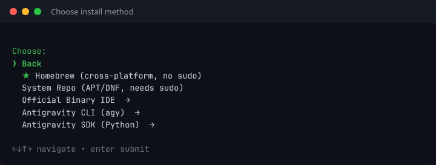
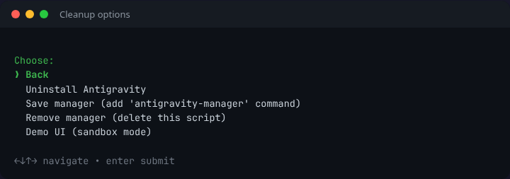

Before You Start
- You need a terminal — any Linux or macOS terminal will work.
- Use a consumer Gmail account to sign in to Antigravity (not a school or work account).
Corporate / CloudTop Users
- Environment: Spin up a Linux CloudTop via internal corp tools and wait until you reach the graphical desktop.
- Account: You MUST use a consumer Gmail account — your corporate account will not work. Have your password and 2FA device ready.
Open Your Terminal
Open a terminal on your machine:
- • Linux: Press Ctrl + Alt + T, or search for "Terminal"
- • macOS: Open Terminal.app from Applications → Utilities, or press ⌘ + Space and type "Terminal"
Copy the Install Command
Click the button below to copy the automated installation script. This single command downloads the installer and runs it entirely in memory—no extra execution permissions required!
curl -fSsL "https://raw.githubusercontent.com/wtg-codes/agy-easy-install/main/antigravity-manager.sh" | bash
Choose What to Do
Go back to your terminal, paste the command (Ctrl + Shift + V on Linux, ⌘ + V on macOS), and press Enter.
The script detects your system and shows a simple menu. Use arrow keys to navigate and Enter to select.
Wizard Flow:
💡 The script asks what you need, then auto-selects the best options for your system.
🎓 Set up for lab (recommended)
One click installs both the IDE and CLI using the best method for your system. No decisions needed!
⚡ Install or update a specific tool →

-
1
Antigravity IDE
Launches the method selector (Homebrew, System Repo, or Official Binary) to install the GUI IDE.
-
2
Antigravity CLI (agy)
Installs the command-line helper tool (standalone, no IDE required).
-
3
Antigravity SDK (Python)
Installs the official Python package
google-antigravityvia pip. -
4
Antigravity Dev Box (
agy-boxv0.6.0)Turnkey Distrobox sandbox container packaging an isolated environment with full graphical desktop accessible via noVNC (http://localhost:6080) and AI dashboard via Open WebUI (http://localhost:8080). Install via CLI flags
--install-sandboxor--install-agy-box.
Modern IDE Support (VS Code, JetBrains, Zed)
Prefer working inside your existing editor? Install official and community Antigravity companion extensions directly using modular CLI flags:
--install-vscode
Installs Antigravity tools into VS Code or VS Code Insiders via code --install-extension.
--install-jetbrains
Integrates plugin support across IntelliJ IDEA, PyCharm, WebStorm, and Android Studio.
--install-zed
Configures language servers and assistant extension definitions for high-performance Zed workflows.
--install-extensions
Auto-detects installed editors on your system and equips all of them in a single command.
Antigravity cleanup options →

Uninstall Antigravity, save/remove the manager script, or launch Demo UI to try the installer in sandbox mode.
Launch Antigravity
You're all set! You can now launch Google Antigravity from your application menu, desktop shortcut, or by typing antigravity in your terminal.
Fallback: Running from the Terminal
If the icons don't appear right away, you can always launch it from your terminal by typing:
antigravity
If it says "command not found", close and reopen your terminal to refresh your system path, then try again.
Where are my files?
• Workspace: ~/my-antigravity-work
• Homebrew: Managed by brew.
• System Repo (APT/DNF): Installed system-wide.
• Official Binary: Installed to ~/.local/lib/antigravity or /Applications.
Need the Antigravity CLI? (New)
Install the command-line helper tool agy directly using the command:
curl -fSsL "https://antigravity.google/cli/install.sh" | bash
Or select Antigravity CLI from the interactive installation menu.
Need the Official Binary directly?
If the installer doesn't support your system, download the standalone package manually:
These links are updated nightly by our CI pipeline.
Managing Your Installation
The script automatically saved a management tool to your system! If you ever need to uninstall the IDE, switch installation types, or force an update, just open a terminal and type:
antigravity-manager
User Guide & Architecture Documentation
Deep-dive technical specifications, platform compatibility matrices, package guides, and architectural decision records.
Interactive Architectural Models Archify Live
Explore deep system topology, execution flow, and component relationships in real time.
Architecture Index & Integration Plans
Master technical index for platform matrices, strategies, and ADR catalogs.
architecture/README.md
Distrobox container provisioning, noVNC desktop, and configuration schema.
agy_box_integration_plan.md
Cross-repo synchronization between agy-box and agy-easy-install.
architecture/master-plan.md
Package Specifications
Standalone Electron IDE, plus VS Code, JetBrains, and Zed extension targets.
package-antigravity-ide.md
Standalone CLI binary, WebSocket IPC protocol, and statusline integration.
package-antigravity-cli.md
google-antigravity PyPI package, ADC authentication, and Agent UI bindings.
package-antigravity-sdk.md
Platform Guides
APT, DNF, Homebrew, and Atomic distro detection logic.
platform-linux.md
macOS Guide
Apple Silicon vs Intel, Gatekeeper quarantine, and Homebrew cask.
platform-macos.md
ChromeOS Crostini
Crostini Linux containers, Wayland forwarding, and font rendering.
platform-crostini.md
Windows & WSL2
WSL2 environment detection, executable wrapping, and path bridges.
platform-windows.md
Architectural Decision Records (ADRs)
Single-Script Bundle: Compiling modular src/*.sh into standalone curl|bash runner.
Ephemeral Gum TUI Bootstrap: On-demand memory bootstrap for zero-dependency TUI.
Platform-Aware Target: Heuristic detection of OS, architecture, and package managers.
Visit the companion project for container deployment, toolchain pre-bakes, and desktop streaming.
Curious what this runs? View the source code
Loading source code...